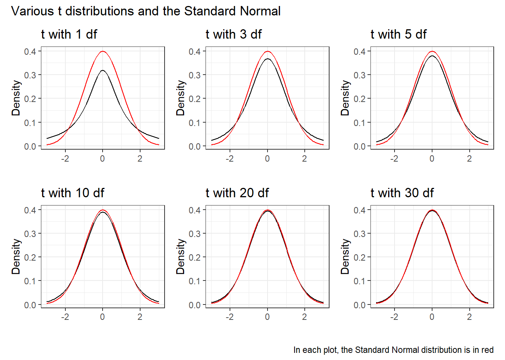

19 Confidence Intervals for a Mean
19.1 Setup: Packages Used Here
In this part of the course, we’ll make use of a few scripts I’ve gathered for you, in the Love-boost R script.
We will also use the favstats function from the mosaic package.
19.2 Introduction
The basic theory of estimation can be used to indicate the probable accuracy and potential for bias in estimating based on limited samples. A point estimate provides a single best guess as to the value of a population or process parameter.
A confidence interval is a particularly useful way to convey to people just how much error one must allow for in a given estimate. In particular, a confidence interval allows us to quantify just how close we expect, for instance, the sample mean to be to the population or process mean. The computer will do the calculations; we need to interpret the results.
The key things that we will need to trade off are cost vs. precision, and precision vs. confidence in the correctness of the statement. Often, if we are dissatisfied with the width of the confidence interval and want to make it smaller, we have little choice but to reconsider the sample – larger samples produce shorter intervals.
19.3 This Chapter’s Goals
Suppose that we are interested in learning something about a population or process, from which we can obtain a sample that consists of a subset of potential results from that population or process. The main goal for many of the parametric models that are a large part of statistics is to estimate population parameters, like a population mean, or regression coefficient, on the basis of a sample. When we do this, we want to describe not only our best guess at the parameter (referred to as a point estimate) but also say something useful about the uncertainty in our estimate, to let us more completely assess what the data have to tell us. A key tool for doing this is a confidence interval.
Essentially every textbook on introductory statistics describes the development of a confidence interval, at least for a mean. Good supplemental resources are highlighted in the references I’ve provided in the course syllabus.
We’ll develop confidence intervals to compare parameters about two populations (either through matched pairs or independent samples) with confidence intervals soon. Here, we’ll consider the problem of estimating a confidence interval to describe the mean (or median) of the population represented by a single sample of quantitative data.
19.4 Serum Zinc Levels in 462 Teenage Males (serzinc)
The serzinc data include serum zinc levels in micrograms per deciliter that have been gathered for a sample of 462 males aged 15-17, My source for these data is Appendix B1 of Pagano and Gauvreau (2000). Serum zinc deficiency has been associated with anemia, loss of strength and endurance, and it is thought that 25% of the world’s population is at risk of zinc deficiency. Such a deficiency can indicate poor nutrition, and can affect growth and vision, for instance. “Typical” values1 are said to be 0.66-1.10 mcg/ml, which is 66 - 110 micrograms per deciliter.
[1] "ID" "zinc"mosaic::favstats(~ zinc, data = serzinc) |>
kbl(digits = 2) |>
kable_styling()| min | Q1 | median | Q3 | max | mean | sd | n | missing | |
|---|---|---|---|---|---|---|---|---|---|
| 50 | 76 | 86 | 98 | 153 | 87.94 | 16 | 462 | 0 |
19.5 Our Goal: A Confidence Interval for the Population Mean
After we assess the data a bit, and are satisfied that we understand it, our first inferential goal will be to produce a confidence interval for the true (population) mean of males age 15-17 based on this sample, assuming that these 462 males are a random sample from the population of interest, that each serum zinc level is drawn independently from an identical distribution describing that population.
To do this, we will have several different procedures available, including:
- A confidence interval for the population mean based on a t distribution, when we assume that the data are drawn from an approximately Normal distribution, using the sample standard deviation. (Interval corresponding to a t test, and it will be a good choice when the data really are approximately Normally distributed.)
- A resampling approach to generate a bootstrap confidence interval for the population mean, which does not require that we assume either that the population standard deviation is known, nor that the data are drawn from an approximately Normal distribution, but which has some other weaknesses.
- A rank-based procedure called the Wilcoxon signed rank test can also be used to yield a confidence interval statement about the population pseudo-median, a measure of the population distribution’s center (but not the population’s mean).
19.6 Exploratory Data Analysis for Serum Zinc
19.6.1 Graphical Summaries
The code presented below builds:
- a histogram (with Normal model superimposed),
- a boxplot (with median notch) and
- a Normal Q-Q plot (with guiding straight line through the quartiles)
for the zinc results from the serzinc tibble.
p1 <- ggplot(serzinc, aes(sample = zinc)) +
geom_qq(col = "dodgerblue") + geom_qq_line(col = "navy") +
theme(aspect.ratio = 1) +
labs(title = "Normal Q-Q plot")
p2 <- ggplot(serzinc, aes(x = zinc)) +
geom_histogram(aes(y = stat(density)),
bins = 10, fill = "dodgerblue", col = "white") +
stat_function(fun = dnorm,
args = list(mean = mean(serzinc$zinc),
sd = sd(serzinc$zinc)),
col = "navy", lwd = 1.5) +
labs(title = "Histogram and Normal Density")
p3 <- ggplot(serzinc, aes(x = zinc, y = "")) +
geom_boxplot(fill = "dodgerblue", outlier.color = "dodgerblue") +
stat_summary(fun = "mean", geom = "point",
shape = 23, size = 3, fill = "white") +
labs(title = "Boxplot", y = "")
p1 + (p2 / p3 + plot_layout(heights = c(4,1))) +
plot_annotation(title = "Serum Zinc (micrograms per deciliter) for 462 Teenage Males")Warning: `stat(density)` was deprecated in ggplot2 3.4.0.
ℹ Please use `after_stat(density)` instead.These results include some of the more useful plots and numerical summaries when assessing shape, center and spread. The zinc data in the serzinc data frame appear to be slightly right skewed, with five outlier values on the high end of the scale, in particular.
19.6.2 Numerical Summaries
This section describes some numerical summaries of interest to augment the plots in summarizing the center, spread and shape of the distribution of serum zinc among these 462 teenage males. Note that I use summarise here to be sure that the dplyr package’s summarise/summarize function is used, rather than the one contained in Hmisc. I could also have used dplyr::summarize() to accomplish the same goal.
describe(serzinc$zinc) |> # from psych package
kbl(digits = 2) |> kable_styling()| vars | n | mean | sd | median | trimmed | mad | min | max | range | skew | kurtosis | se | |
|---|---|---|---|---|---|---|---|---|---|---|---|---|---|
| X1 | 1 | 462 | 87.94 | 16 | 86 | 87.17 | 16.31 | 50 | 153 | 103 | 0.62 | 0.87 | 0.74 |
serzinc |>
summarise(mean(zinc), median(zinc), sd(zinc),
skew1 = (mean(zinc) - median(zinc))/sd(zinc)) |>
kbl(digits = 2) |> kable_styling()| mean(zinc) | median(zinc) | sd(zinc) | skew1 |
|---|---|---|---|
| 87.94 | 86 | 16 | 0.12 |
The skew1 value here (mean - median divided by the standard deviation) backs up our graphical assessment, that the data are slightly right skewed.
Rounded to two decimal places, the standard deviation of the serum zinc data turns out to be 16, and so the standard error of the mean, shown as se in the psych::describe output, is 16 divided by the square root of the sample size, n = 462. This standard error is about to become quite important to us in building statistical inferences about the mean of the entire population of teenage males based on this sample.
19.7 Defining a Confidence Interval
A confidence interval for a population or process mean uses data from a sample (and perhaps some additional information) to identify a range of potential values for the population mean, which, if certain assumptions hold, can be assumed to provide a reasonable estimate for the true population mean. A confidence interval consists of:
- An interval estimate describing the population parameter of interest (here the population mean), and
- A probability statement, expressed in terms of a confidence level.
19.8 Estimating the Population Mean from the Serum Zinc data
As an example, suppose that we are willing to assume that the mean serum zinc level across the entire population of teenage males, \(\mu\), follows a Normal distribution (and so, summarizing it with a mean is a rational thing to do.) Suppose that we are also willing to assume that the 462 teenage males contained in the serzinc tibble are a random sample from that complete population. While we know the mean of the sample of 462 boys, we don’t know \(\mu\), the mean across all teenage males. So we need to estimate it.
Earlier we estimated that a 90% confidence interval for the mean serum zinc level (\(\mu\)) across the entire population of teenage males was (86.71, 89.16) micrograms per deciliter. How should we interpret this result?
- Some people think this means that there is a 90% chance that the true mean of the population, \(\mu\), falls between 86.71 and 89.16 micrograms per deciliter. That’s not correct.
- The population mean is a constant parameter of the population of interest. That constant is not a random variable, and does not change. So the actual probability of the population mean falling inside that range is either 0 or 1.
- Our confidence is in our process.
- It’s in the sampling method (random sampling) used to generate the data, and in the assumption that the population follows a Normal distribution.
- It’s captured in our accounting for one particular type of error (called sampling error) in developing our interval estimate, while assuming all other potential sources of error are negligible.
So, what’s closer to the truth is:
- If we used this same method to sample data from the true population of teenage males, and built 100 such 90% confidence intervals, then about 90 of them would contain the true population mean.
19.9 Confidence vs. Significance Level
We’ve estimated a 90% confidence interval for the population mean serum zinc level among teenage boys using the serzinc data.
- We call 100(1-\(\alpha\))%, here, 90%, or 0.90, the confidence level, and
- \(\alpha\) = 10%, or 0.10 is called the significance level.
If we had instead built a series of 100 different 95% confidence intervals, then about 95 of them would contain the true value of \(\mu\).
Let’s look more closely at the issue of estimating a population mean based on a sample of observations. We will need three critical pieces - the sample, the confidence level, and the margin of error, which is based on the standard error of a sample mean, when we are estimating a population mean.
19.10 The Standard Error of a Sample Mean
The standard error, generally, is the name we give to the standard deviation associated with any particular parameter estimate.
If we are using a sample mean based on a sample of size \(n\) to estimate a population mean, the standard error of that sample mean is the standard deviation of the measurements in the population, divided by the square root of the sample size.
We often estimate this particular standard error with \(s\) (the sample standard deviation) divided by the square root of the sample size.
-
Other statistics have different standard errors.
- \(\sqrt{p (1-p) / n}\) is the standard error of the sample proportion \(p\) estimated using a sample of size \(n\).
- \(\sqrt{\frac{1-r^2}{n-2}}\) is the standard error of the sample Pearson correlation \(r\) estimated using \(n\) pairs of observations.
- \(\sqrt{\frac{SD_1^2}{n_1} + \frac{SD_2^2}{n_2}}\) is the standard error of the difference between two means \(\bar{x}_1\) and \(\bar{x}_2\), estimated using samples of sizes \(n_1\) and \(n_2\) with sample standard devistions \(SD_1\) and \(SD_2\), respectively.
In developing a confidence interval for a population mean, we may be willing to assume that the data in our sample are drawn from a Normally distributed population. If so, the most common and useful means of building a confidence interval makes use of the t distribution (sometimes called Student’s t) and the notion of a standard error.
19.11 The t distribution and CIs for a Mean
In practical settings, we will use the t distribution to estimate a confidence interval from a population mean whenever we:
- are willing to assume that the sample is drawn at random from a population or process with a Normal distribution,
- are using our sample to estimate both the mean and standard deviation, and
- have a small sample size.
19.11.1 The Formula
The two-sided \(100(1-\alpha)\)% confidence interval (based on a \(t\) test) is:
\[\bar{x} \pm t_{\alpha/2, n-1}(s / \sqrt{n})\]
where \(t_{\alpha/2, n-1}\) is the value that cuts off the top \(\alpha/2\) percent of the \(t\) distribution, with \(n - 1\) degrees of freedom.
We obtain the relevant cutoff value in R by substituting in values for alphaover2 and n-1 into the following line of R code:
qt(alphaover2, df = n-1, lower.tail=FALSE)
19.11.2 Student’s t distribution
Student’s t distribution looks a lot like a Normal distribution, when the sample size is large. Unlike the normal distribution, which is specified by two parameters, the mean and the standard deviation, the t distribution is specified by one parameter, the degrees of freedom.
- t distributions with large numbers of degrees of freedom are more or less indistinguishable from the standard Normal distribution.
- t distributions with smaller degrees of freedom (say, with df < 30, in particular) are still symmetric, but are more outlier-prone than a Normal distribution
p1 <- ggplot(data.frame(x = c(-3, 3)), aes(x)) +
stat_function(fun = dt, args = list(df = 1)) +
stat_function(fun = dnorm, col = "red") +
labs(title = "t with 1 df", y = "Density", x = "")
p2 <- ggplot(data.frame(x = c(-3, 3)), aes(x)) +
stat_function(fun = dt, args = list(df = 3)) +
stat_function(fun = dnorm, col = "red") +
labs(title = "t with 3 df", y = "Density", x = "")
p3 <- ggplot(data.frame(x = c(-3, 3)), aes(x)) +
stat_function(fun = dt, args = list(df = 5)) +
stat_function(fun = dnorm, col = "red") +
labs(title = "t with 5 df", y = "Density", x = "")
p4 <- ggplot(data.frame(x = c(-3, 3)), aes(x)) +
stat_function(fun = dt, args = list(df = 10)) +
stat_function(fun = dnorm, col = "red") +
labs(title = "t with 10 df", y = "Density", x = "")
p5 <- ggplot(data.frame(x = c(-3, 3)), aes(x)) +
stat_function(fun = dt, args = list(df = 20)) +
stat_function(fun = dnorm, col = "red") +
labs(title = "t with 20 df", y = "Density", x = "")
p6 <- ggplot(data.frame(x = c(-3, 3)), aes(x)) +
stat_function(fun = dt, args = list(df = 30)) +
stat_function(fun = dnorm, col = "red") +
labs(title = "t with 30 df", y = "Density", x = "")
(p1 + p2 + p3) / (p4 + p5 + p6) +
plot_annotation(
title = "Various t distributions and the Standard Normal",
caption = "In each plot, the Standard Normal distribution is in red")
19.12 Building the CI in R
Suppose we wish to build a 90% confidence interval for the true mean serum zinc level across the entire population of teenage males. The confidence level will be 90%, or 0.90, and so the \(\alpha\) value, which is 1 - confidence = 0.10.
So what we know going in is that:
- We want \(\alpha\) = 0.10, because we’re creating a 90% confidence interval.
- The sample size n = 462 serum zinc measurements.
- The sample mean of those measurements, \(\bar{x}\) = 87.937 micrograms per deciliter.
- The sample standard deviation of those measurements, s = 16.005 micrograms per deciliter.
19.13 Using an intercept-only regression model
in the context of fitting an intercept-only linear regression model. An intercept-only model is fitted by putting the number 1 on the right hand side of our linear model. The resulting model simply fits the overall mean of the data as a prediction for all subjects.
model_zinc <- lm(zinc ~ 1, data = serzinc)summary(model_zinc)
Call:
lm(formula = zinc ~ 1, data = serzinc)
Residuals:
Min 1Q Median 3Q Max
-37.937 -11.937 -1.937 10.063 65.063
Coefficients:
Estimate Std. Error t value Pr(>|t|)
(Intercept) 87.9372 0.7446 118.1 <2e-16 ***
---
Signif. codes: 0 '***' 0.001 '**' 0.01 '*' 0.05 '.' 0.1 ' ' 1
Residual standard error: 16 on 461 degrees of freedomconfint(model_zinc, level = 0.90) 5 % 95 %
(Intercept) 86.71 89.16446Generally, though, I’ll use the tidy() function in the broom package to obtain the key information from a model like this:
tidy(model_zinc, conf.int = TRUE, conf = 0.90) |>
kbl(digits = 2) |> kable_styling()| term | estimate | std.error | statistic | p.value | conf.low | conf.high |
|---|---|---|---|---|---|---|
| (Intercept) | 87.94 | 0.74 | 118.1 | 0 | 86.71 | 89.16 |
As an alternative, we could also use the t.test function, which can build (in this case) a two-sided confidence interval for the zinc levels like this:
tt <- t.test(serzinc$zinc,
conf.level = 0.90,
alternative = "two.sided")
tt
One Sample t-test
data: serzinc$zinc
t = 118.1, df = 461, p-value < 2.2e-16
alternative hypothesis: true mean is not equal to 0
90 percent confidence interval:
86.71000 89.16446
sample estimates:
mean of x
87.93723 and the tidy() function from the broom package works here, too.
tidy(tt, conf.int = TRUE, conf = 0.90) |>
kbl(digits = 2) |> kable_styling()| estimate | statistic | p.value | parameter | conf.low | conf.high | method | alternative |
|---|---|---|---|---|---|---|---|
| 87.94 | 118.1 | 0 | 461 | 86.71 | 89.16 | One Sample t-test | two.sided |
And again, our 90% confidence interval for the true population mean serum zinc level, based on our sample of 462 patients, is (86.71, 89.16) micrograms per deciliter2.
19.14 Interpreting the Result
An appropriate interpretation of the 90% two-sided confidence interval above follows:
- (86.71, 89.16) micrograms per deciliter is a 90% two-sided confidence interval for the population mean serum zinc level among teenage males.
- Our point estimate for the true population mean serum zinc level is 87.94. The values in the interval (86.71, 89.16) represent a reasonable range of estimates for the true population mean serum zinc level, and we are 90% confident that this method of creating a confidence interval will produce a result containing the true population mean serum zinc level.
- Were we to draw 100 samples of size 462 from the population described by this sample, and use each such sample to produce a confidence interval in this manner, approximately 90 of those confidence intervals would cover the true population mean serum zinc level.
19.15 What if we want a 95% or 99% confidence interval instead?
We can obtain them using tidy and the same modeling approach.
tidy(model_zinc, conf.int = TRUE, conf.level = 0.95) |>
kbl(digits = 2) |> kable_styling()| term | estimate | std.error | statistic | p.value | conf.low | conf.high |
|---|---|---|---|---|---|---|
| (Intercept) | 87.94 | 0.74 | 118.1 | 0 | 86.47 | 89.4 |
tidy(model_zinc, conf.int = TRUE, conf.level = 0.99) |>
kbl(digits = 2) |> kable_styling()| term | estimate | std.error | statistic | p.value | conf.low | conf.high |
|---|---|---|---|---|---|---|
| (Intercept) | 87.94 | 0.74 | 118.1 | 0 | 86.01 | 89.86 |
19.16 Using the broom package with the t test
The broom package takes the messy output of built-in functions in R, such as lm, t.test or wilcox.test, and turns them into tidy data frames. A detailed description of the package and three of its key functions is found at https://github.com/tidyverse/broom.
For example, we can use the tidy function within broom to create a single-row tibble of the key results from a t test.
tt <- t.test(serzinc$zinc, conf.level = 0.95, alternative = "two.sided")
tidy(tt) |> kbl(digits = 2) |> kable_styling()| estimate | statistic | p.value | parameter | conf.low | conf.high | method | alternative |
|---|---|---|---|---|---|---|---|
| 87.94 | 118.1 | 0 | 461 | 86.47 | 89.4 | One Sample t-test | two.sided |
We can thus pull the endpoints of a 95% confidence interval directly from this output. broom also has a glance function, which returns the same information as tidy in the case of a t-test.
19.16.1 Effect of Changing the Confidence Level
Below, we see two-sided confidence intervals for various levels of \(\alpha\).
| Confidence Level | \(\alpha\) | Two-Sided Interval Estimate for Zinc Level Population Mean, \(\mu\) | Point Estimate of \(\mu\) |
|---|---|---|---|
| 80% or 0.80 | 0.20 | (87, 88.9) | 87.9 |
| 90% or 0.90 | 0.10 | (86.7, 89.2) | 87.9 |
| 95% or 0.95 | 0.05 | (86.5, 89.4) | 87.9 |
| 99% or 0.99 | 0.01 | (86, 89.9) | 87.9 |
What happens to the width of the confidence interval in this table as the confidence level changes?
19.17 One-sided vs. Two-sided Confidence Intervals
Occasionally, we want to estimate either an upper limit for the population mean \(\mu\), or a lower limit for \(\mu\), but not both.
t.test(serzinc$zinc, conf.level = 0.90, alternative = "greater")
One Sample t-test
data: serzinc$zinc
t = 118.1, df = 461, p-value < 2.2e-16
alternative hypothesis: true mean is greater than 0
90 percent confidence interval:
86.98161 Inf
sample estimates:
mean of x
87.93723 t.test(serzinc$zinc, conf.level = 0.90, alternative = "less")
One Sample t-test
data: serzinc$zinc
t = 118.1, df = 461, p-value = 1
alternative hypothesis: true mean is less than 0
90 percent confidence interval:
-Inf 88.89285
sample estimates:
mean of x
87.93723 Note the relationship between the two-sided 80% confidence interval, and the one-sided 90% confidence intervals.
| Confidence | \(\alpha\) | Type of Interval | Interval Estimate for Zinc Level Population Mean, \(\mu\) |
|---|---|---|---|
| 80% (.80) | 0.20 | Two-Sided | (86.98, 88.89) |
| 90% (.90) | 0.10 | One-Sided (Less Than) | \(\mu\) < 88.89. |
| 90% (.90) | 0.10 | One-Sided (Greater Than) | \(\mu\) > 86.98. |
Why does this happen? The 80% two-sided interval is placed so as to cut off the top 10% of the distribution with its upper bound, and the bottom 10% of the distribution with its lower bound. The 90% “less than” one-sided interval is placed so as to have its lower bound cut off the top 10% of the distribution.
The same issue appears when we consider two-sided 90% and one-sided 95% confidence intervals.
| Confidence | \(\alpha\) | Type of Interval | Interval Estimate for Zinc Level Population Mean, \(\mu\) |
|---|---|---|---|
| 90% (.90) | 0.10 | Two-Sided | (86.71, 89.16) |
| 95% (.95) | 0.05 | One-Sided (Less Than) | \(\mu\) < 89.16. |
| 95% (.95) | 0.05 | One-Sided (Greater Than) | \(\mu\) > 86.71. |
Again, the 90% two-sided interval cuts off the top 5% and bottom 5% of the distribution with its bounds. The 95% “less than” one-sided interval also has its lower bound cut off the top 5% of the distribution.
19.18 Bootstrap Confidence Intervals
The bootstrap (and in particular, what’s known as bootstrap resampling) is a really good idea that you should know a little bit about.
If we want to know how accurately a sample mean estimates the population mean, we would ideally like to take a very, very large sample, because if we did so, we could conclude with something that would eventually approach mathematical certainty that the sample mean would be very close to the population mean.
But we can rarely draw enormous samples. So what can we do?
19.19 Resampling is A Big Idea
One way to find out how precise our estimates are is to run them on multiple samples of the same size. This resampling approach was codified originally by Brad Efron in 1979.
Oversimplifying a lot, the idea is that if we sample (with replacement) from our current sample, we can draw a new sample of the same size as our original.
- And if we repeat this many times, we can generate as many samples of, say, 462 zinc levels, as we like.
- Then we take these thousands of samples and calculate (for instance) the sample mean for each, and plot a histogram of those means.
- If we then cut off the top and bottom 5% of these sample means, we obtain a reasonable 90% confidence interval for the population mean.
19.20 When is a Bootstrap Confidence Interval Reasonable?
A bootstrapped interval estimate for the population mean, \(\mu\), will be reasonable as long as we’re willing to believe that:
- the original sample was a random sample (or at least a completely representative sample) from a population,
- and that the samples are independent of each other,
even if the population of interest doesn’t follow a Normal, or even a symmetric distribution.
A downside of the bootstrap is that you and I will get (somewhat) different answers if we resample from the same data without setting the same random seed.
19.21 Bootstrap confidence interval for the mean: Process
To avoid the Normality assumption, and take advantage of modern computing power, we use R to obtain a bootstrap confidence interval for the population mean based on a sample.
What the computer does:
- Re-sample the data with replacement, until it obtains a new sample that is equal in size to the original data set.
- Calculates the statistic of interest (here, a sample mean.)
- Repeat the steps above many times (the default is 1,000 using our approach) to obtain a set of 1,000 sample means.
- Sort those 1,000 sample means in order, and estimate the 95% confidence interval for the population mean based on the middle 95% of the 1,000 bootstrap samples.
- Send us a result, containing the sample mean, and a 95% confidence interval for the population mean
19.22 Using R to estimate a bootstrap CI
The command that we use to obtain a Confidence Interval for \(\mu\) using the basic nonparametric bootstrap and without assuming a Normally distributed population, is smean.cl.boot, a part of the Hmisc package in R.
set.seed(431)
smean.cl.boot(serzinc$zinc, B = 1000, conf.int = 0.90) ## from Hmisc Mean Lower Upper
87.93723 86.76775 89.20617 - Remember that the t-based 90% CI for \(\mu\) was (86.71, 89.16), according to the following output…
19.23 Comparing Bootstrap and T-Based Confidence Intervals
- The
smean.cl.bootfunction (unlike most R functions) deletes missing data automatically, as does thesmean.cl.normalfunction, which can also be used to produce the t-based confidence interval.
set.seed(431)
smean.cl.boot(serzinc$zinc, B = 1000, conf.int = 0.90) Mean Lower Upper
87.93723 86.76775 89.20617 smean.cl.normal(serzinc$zinc, conf.int = 0.90) Mean Lower Upper
87.93723 86.71000 89.16446 Bootstrap resampling confidence intervals do not follow the general confidence interval strategy using a point estimate plus or minus a margin for error.
- A bootstrap interval is often asymmetric, and while it will generally have the point estimate (the sample mean) near its center, for highly skewed data, this will not necessarily be the case.
- We will usually use either 1,000 (the default) or 10,000 bootstrap replications for building confidence intervals – practically, it makes little difference.
19.23.1 Bootstrap Resampling: Advantages and Caveats
The bootstrap may seem like the solution to all estimation problems. In theory, we could use the same approach to find a confidence interval for any other parameter – it’s not perfect, but it is very useful. Bootstrap procedures exist for virtually any statistical comparison - the t-test analog is just one of many possibilities, and bootstrap methods are rapidly gaining on more traditional approaches in the literature thanks mostly to faster computers.
The great advantage of the bootstrap is its relative simplicity, but don’t forget that many of the original assumptions of the t-based confidence interval still hold.
- Using a bootstrap does eliminate the need to worry about the Normality assumption in small sample size settings, but it still requires independent and identically distributed samples from the population of interest.
The bootstrap produces clean and robust inferences (such as confidence intervals) in many tricky situations. It is still possible that the results can be both:
- inaccurate (i.e. they can include the true value of the unknown population mean less often than the stated confidence probability) and
- imprecise (i.e., they can include more extraneous values of the unknown population mean than is desirable).
19.24 Using the Bootstrap to develop other CIs
19.24.1 Changing the Confidence Level
What if we wanted to change the confidence level?
set.seed(431654)
smean.cl.boot(serzinc$zinc, B = 1000, conf.int = 0.95) Mean Lower Upper
87.93723 86.51066 89.42002 set.seed(431321)
smean.cl.boot(serzinc$zinc, B = 1000, conf.int = 0.99) Mean Lower Upper
87.93723 86.20657 89.68619 19.25 One-Tailed Bootstrap Confidence Intervals
If you want to estimate a one tailed confidence interval for the population mean using the bootstrap, then the procedure is as follows:
- Determine \(\alpha\), the significance level you want to use in your one-sided confidence interval. Remember that \(\alpha\) is 1 minus the confidence level. Let’s assume we want a 90% one-sided interval, so \(\alpha\) = 0.10.
- Double \(\alpha\) to determine the significance level we will use in the next step to fit a two-sided confidence interval.
- Fit a two-sided confidence interval with confidence level \(100(1 - 2*\alpha)\). Let the bounds of this interval be (a, b).
- The one-sided (greater than) confidence interval will have a as its lower bound.
- The one-sided (less than) confidence interval will have b as its upper bound.
Suppose that we want to find a 95% one-sided upper bound for the population mean serum zinc level among teenage males, \(\mu\), using the bootstrap.
Since we want a 95% confidence interval, we have \(\alpha\) = 0.05. We double that to get \(\alpha\) = 0.10, which implies we need to instead fit a two-sided 90% confidence interval.
set.seed(43101)
smean.cl.boot(serzinc$zinc, B = 1000, conf.int = 0.90) ## from Hmisc package Mean Lower Upper
87.93723 86.70509 89.11266 The upper bound of this two-sided 90% CI will also be the upper bound for a 95% one-sided CI.
19.25.1 Bootstrap CI for the Population Median
If we are willing to do a small amount of programming work in R, we can obtain bootstrap confidence intervals for other population parameters besides the mean. One statistic of common interest is the median. How do we find a confidence interval for the population median using a bootstrap approach? The easiest way I know of makes use of the boot package, as follows.
In step 1, we specify a new function to capture the medians from our sample.
f.median <- function(y, id)
{ median ( y[id]) }In step 2, we call the boot.ci function from the boot package.
BOOTSTRAP CONFIDENCE INTERVAL CALCULATIONS
Based on 1000 bootstrap replicates
CALL :
boot.ci(boot.out = boot(serzinc$zinc, f.median, 1000), conf = 0.9,
type = "basic")
Intervals :
Level Basic
90% (84, 87 )
Calculations and Intervals on Original ScaleThis yields a 90% confidence interval for the population median serum zinc level. Recall that the sample median for the serum zinc levels in our sample of 462 teenage males was 86 micrograms per deciliter.
mosaic::favstats(~ zinc, data = serzinc) |>
kbl(digits = 2) |> kable_styling()| min | Q1 | median | Q3 | max | mean | sd | n | missing | |
|---|---|---|---|---|---|---|---|---|---|
| 50 | 76 | 86 | 98 | 153 | 87.94 | 16 | 462 | 0 |
Actually, the boot.ci function can provide up to five different types of confidence interval (see the help file) if we change to type="all", and some of those other versions have attractive properties. However, we’ll stick with the basic approach in 431.
19.25.2 Bootstrap CI for the IQR
If for some reason, we want to find a 95% confidence interval for the population value of the inter-quartile range via the bootstrap, we can do it.
IQR(serzinc$zinc)[1] 22f.IQR <- function(y, id)
{ IQR (y[id]) }
set.seed(431207)
boot.ci(boot(serzinc$zinc, f.IQR, 1000),
conf=0.95, type="basic")BOOTSTRAP CONFIDENCE INTERVAL CALCULATIONS
Based on 1000 bootstrap replicates
CALL :
boot.ci(boot.out = boot(serzinc$zinc, f.IQR, 1000), conf = 0.95,
type = "basic")
Intervals :
Level Basic
95% (20.00, 24.24 )
Calculations and Intervals on Original Scale19.26 Wilcoxon Signed Rank Procedure for CIs
It turns out to be difficult, without the bootstrap, to estimate an appropriate confidence interval for the median of a population, which might be an appealing thing to do, particularly if the sample data are clearly not Normally distributed, so that a median seems like a better summary of the center of the data. Bootstrap procedures are available to perform the task.
The Wilcoxon signed rank approach can be used as an alternative to t-based procedures to build interval estimates for the population pseudo-median when the population cannot be assumed to follow a Normal distribution.
As it turns out, if you’re willing to assume the population is symmetric (but not necessarily Normally distributed) then the pseudo-median is actually equal to the population median.
19.26.1 What is a Pseudo-Median?
The pseudo-median of a particular distribution G is the median of the distribution of (u + v)/2, where both u and v have the same distribution (G).
- If the distribution G is symmetric, then the pseudomedian is equal to the median.
- If the distribution is skewed, then the pseudomedian is not the same as the median.
- For any sample, the pseudomedian is defined as the median of all of the midpoints of pairs of observations in the sample.
19.27 Wilcoxon Signed Rank-based CI in R
wilcox.test(serzinc$zinc, conf.int = TRUE, conf.level = 0.95)
Wilcoxon signed rank test with continuity correction
data: serzinc$zinc
V = 106953, p-value < 2.2e-16
alternative hypothesis: true location is not equal to 0
95 percent confidence interval:
85.99997 88.50002
sample estimates:
(pseudo)median
87.49996 19.27.1 Interpreting the Wilcoxon CI for the Population Median
If we’re willing to believe the zinc levels come from a population with a symmetric distribution, the 95% Confidence Interval for the population median would be (86, 88.5)
For a non-symmetric population, this only applies to the pseudo-median.
Note that the pseudo-median (87.5) is actually closer here to the sample mean (87.9) than it is to the sample median (86).
19.27.2 Using the broom package with the Wilcoxon test
We can also use the tidy function within broom to create a single-row tibble of the key results from a Wilcoxon test, so long as we run wilcox.test specifying that we want a confidence interval.
wt <- wilcox.test(serzinc$zinc, conf.int = TRUE, conf.level = 0.95)
tidy(wt) |> kbl(digits = 2) |> kable_styling()| estimate | statistic | p.value | conf.low | conf.high | method | alternative |
|---|---|---|---|---|---|---|
| 87.5 | 106953 | 0 | 86 | 88.5 | Wilcoxon signed rank test with continuity correction | two.sided |
19.28 General Advice
We have described several approaches to estimating a confidence interval for the center of a distribution of quantitative data.
- The most commonly used approach uses the t distribution to estimate a confidence interval for a population/process mean. This requires some extra assumptions, most particularly that the underlying distribution of the population values is at least approximately Normally distributed. This is identical to the result we get from an intercept-only linear regression model.
- A more modern and very general approach uses the idea of the bootstrap to estimate a confidence for a population/process parameter, which could be a mean, median or other summary statistic. The bootstrap, and the underlying notion of resampling is an important idea that lets us avoid some of the assumptions (in particular Normality) that are required by other methods. Bootstrap confidence intervals involve random sampling, so that the actual values obtained will differ a bit across replications.
- Finally, the Wilcoxon signed-rank method is one of a number of inferential tools which transform the data to their ranks before estimating a confidence interval. This avoids some assumptions, but yields inferences about a less-familiar parameter - the pseudo-median.
Most of the time, the bootstrap provides a reasonably adequate confidence interval estimate of the population value of a parameter (mean or median, most commonly) from a distribution when our data consists of a single sample of quantitative information.
Reference values for those over the age of 10 years at http://www.mayomedicallaboratories.com/test-catalog/Clinical+and+Interpretive/8620 , visited 2019-09-17.↩︎
Since the measured zinc levels appear as integers, we should probably be rounding even further in our confidence interval, down to perhaps one decimal place.↩︎